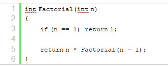
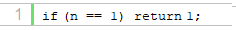
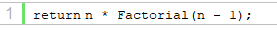
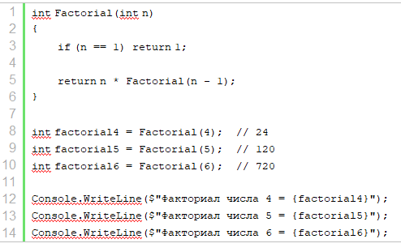
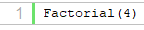
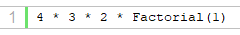
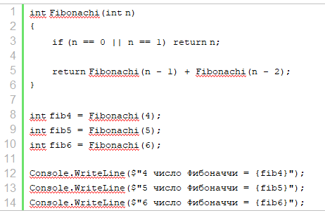
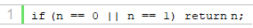
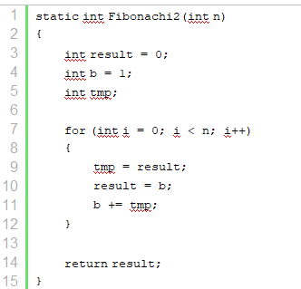

| Тема 3. Рекурсия в C#. | ||
| Назад | ||
|
Отдельно остановимся на рекурсивных функциях. Рекурсивная функция представляет такую конструкцию, при которой функция вызывает саму себя. Рекурсивная функция факториала
Возьмем, к примеру, вычисление факториала, которое использует
формулу n!
= 1 * 2 * … * n. То есть по
сути для нахождения факториала числа мы перемножаем все числа до
этого числа (n). Например, факториал числа 4 равен Определим метод для нахождения факториала:
 При создании рекурсивной функции в ней обязательно должен быть некоторый базовый вариант, с которого начинается вычисление функции. В случае с факториалом это факториал числа 1, который равен 1. Факториалы всех остальных положительных чисел будет начинаться с вычисления факториала числа 1, который равен 1. На уровне языка программирования для возвращения базового варианта применяется оператор return:
 То есть, если вводимое число равно 1, то возвращается 1 Другая особенность рекурсивных функций: все рекурсивные вызовы должны обращаться к подфункциям, которые в конце концов сходятся к базовому варианту:
 Так, при передаче в функцию числа, которое не равно 1, при дальнейших рекурсивных вызовах подфункций в них будет передаваться каждый раз число, меньшее на единицу. И в конце концов мы дойдем до ситуации, когда число будет равно 1, и будет использован базовый вариант. Это так называемый рекурсивный спуск. Используем эту функцию:
 Рассмотрим поэтапно, что будет в случае вызова Factorial(4).
В итоге выражение
 В реальности выливается в
 Рекурсивная функция ФибоначчиДругим распространенным показательным примером рекурсивной функции служит функция, вычисляющая числа Фибоначчи. n-й член последовательности Фибоначчи определяется по формуле: f(n)=f(n-1) + f(n-2), причем f(0)=0, а f(1)=1. То есть последовательность Фибоначчи будет выглядеть так 0 (0-й член), 1 (1-й член), 1, 2, 3, 5, 8, 13, 21, 34, 55, 89, 144, .... Для определения чисел этой последовательности определим следующий метод:
 Здесь базовый вариант выглядит следующий образом:

То есть, если мы ищем нулевой или первый элемент
последовательности, то возвращается это же число - 0 или 1.
Иначе возвращается результат выражения Рекурсии и циклыЭто простейшие пример рекурсивных функций, которые призваны дать понимание работы рекурсии. В то же время для обоих функций вместо рекурсий можно использовать циклические конструкции. И, как правило, альтернативы на основе циклов работают быстрее и более эффективны, чем рекурсия. Например, вычисление чисел Фибоначчи с помощью циклов:
 В то же время в некоторых ситуациях рекурсия предоставляет элегантное решение, например, при обходе различных древовидных представлений, к примеру, дерева каталогов и файлов.
|
||
| Конспект подготовлен Бакулиным А. М. 2022 год. | ||